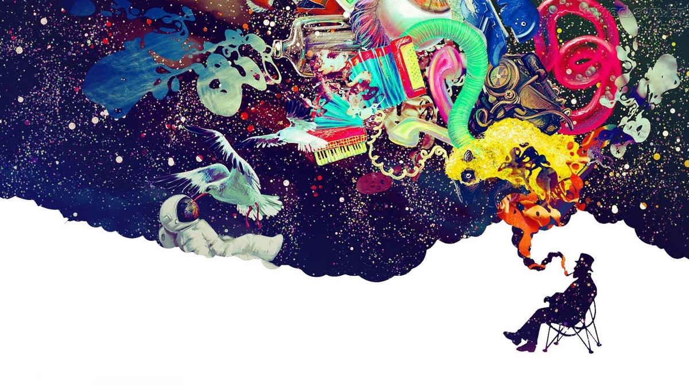

Sigmund Freud fue el creador del psicoanálisis, una filosofía, práctica terapéutica e investigación que se centra en el estudio e intervención del ser humano, sobre todo en lo relacionado con los aspectos inconscientes. Ahora bien, Freud dentro de sus estudios mencionó en diversas ocasiones al arte e incluso lo vio como movilizador de las angustias.
Ciertamente, el vínculo del inconsciente con el arte ha sido ampliamente reconocido. A través de este artículo iremos más allá de ello. Hablaremos de cuál es la relación entre estas dos disciplinas. Te proponemos que nos acompañes en en este recorrido.
Primero que todo, el arte al igual que la psicología, trabajan con el ambito subjetivo y sensorial. Las reacciones mas expresivas que caracterizan nuestra realidad
Sigmund Freud fue el creador del psicoanálisis, una filosofía, práctica terapéutica e investigación que se centra en el estudio e intervención del ser humano, sobre todo en lo relacionado con los aspectos inconscientes. Ahora bien, Freud dentro de sus estudios mencionó en diversas ocasiones al arte e incluso lo vio como movilizador de las angustias.
Ciertamente, el vínculo del inconsciente con el arte ha sido ampliamente reconocido. A través de este artículo iremos más allá de ello. Hablaremos de cuál es la relación entre estas dos disciplinas. Te proponemos que nos acompañes en en este recorrido.
El arte como lenguaje
El arte, al ser movilizador de nuestras expresiones a elementos sensoriales (el sonido, las imagenes, colores y composiciones) Crea un lenguaje unico y universal lleno de expresion, que puede tener aqui y en muchas partes miles de significados.
El arte, al ser movilizador de nuestras expresiones a elementos sensoriales (el sonido, las imagenes, colores y composiciones) Crea un lenguaje unico y universal lleno de expresion, que puede tener aqui y en muchas partes miles de significados.
Es por esta razón, que las emociones a través del arte simbolizan y reflejan a produndida reflejos intimos de cada quien. Por lo que tambien, podemos decifrar que tiene este mismo en la cultura.
Es por esta razón, que las emociones a través del arte simbolizan y reflejan a produndida reflejos intimos de cada quien. Por lo que tambien, podemos decifrar que tiene este mismo en la cultura.
